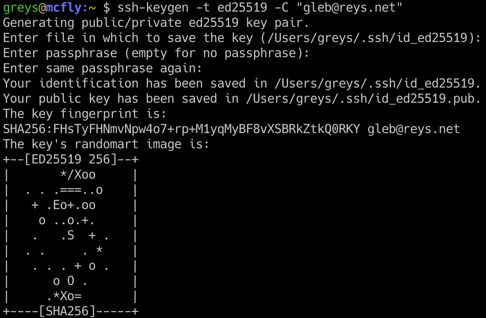

Как сгенерировать SSH-ключ ed25519
 Генерация SSH-ключа ed25519
Я надеюсь переустановить свой MacBook Pro 15 дюймов 2017 года со свежей macOS Catalina в ближайшее время, и часть подготовки — это тестирование моих методов установки (привет, пиво!) и миграция файлов конфигурации. Сегодня я решил настроить новую пару ключей SSH.
ed25519 — это относительно новое криптографическое решение, реализующее алгоритм цифровой подписи кривой Эдвардса (EdDSA).
Я говорю относительно , потому что ed25519 поддерживается OpenSSH уже около 5 лет, поэтому его нельзя считать передовым. Тем не менее, люди настолько погрязли в привычках, что многие ИТ-специалисты, ежедневно использующие SSH/SCP, даже не слышали об этом типе ключа.
Точно так же не все программные решения поддерживают ed25519 прямо сейчас, но реализации SSH в большинстве современных операционных систем, безусловно, поддерживают его.
Почему ключ ed25519 — хорошая идея
По сравнению с наиболее распространенным типом ключа SSH — RSA — ed25519 содержит ряд интересных улучшений:
Сгенерировать SSH-ключ ed25519
Вот команда для создания SSH-ключа ed25519:
greys@mcfly:~ $ ssh-keygen -t ed25519 -C "gleb@reys.net"
Generating public/private ed25519 key pair.
Enter file in which to save the key (/Users/greys/.ssh/id_ed25519):
Enter passphrase (empty for no passphrase):
Enter same passphrase again:
Your identification has been saved in /Users/greys/.ssh/id_ed25519.
Your public key has been saved in /Users/greys/.ssh/id_ed25519.pub.
The key fingerprint is:
SHA256:FHsTyFHNmvNpw4o7+rp+M1yqMyBF8vXSBRkZtkQ0RKY gleb@reys.net
The key's randomart image is:
+--[ED25519 256]--+
| */Xoo |
| . . .===..o |
| + .Eo+.oo |
| o ..o.+. |
| . .S + . |
| . . . * |
| . . . + o . |
| o O . |
| .*Xo= |
+----[SHA256]-----+
Вот и все — эта пара ключей готова к развертыванию на серверах SSH, GitHub или любом другом сервисе, который может их использовать.